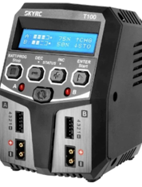
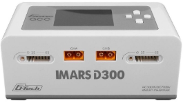
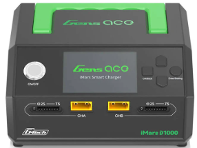
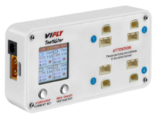

Din första laddare
En bra laddare kännetecknas av
- Kunna ladda olika typer av batterikemikalier. T.ex. LiPo och LiPoHV som används som drivkälla till elmodeller, LIFE och LIION som används till mottagare och sändarbatterier.
- Stor fördel om den kan ladda mer än ett batteri samtidigt, ger mindre väntetid.
- Förutom balanserad laddning ska det även finnas "storage-laddning" som sätter rätt spänning när batteriet inte används. Minskar risker och förlänger livslängden.
- Enklare om det finns en inbyggd nätdel så du kan ansluta den direkt till ett 230 V-uttag (AC-intag).
- Alla platser har inte 230 V-uttag då är det bra om det även finns ett DC-intag så du kan ta energin från ett större extra batteri eller från ett fordon/bil.
- Bra om adapterkablar medföljer, räkna ändå med att du behöver köpa några adaptrar.
- "Smart batteri"-funktionerna ska inte utesluta möjligheten att ladda vanliga batterier.
Notering om "smarta batterier" och "smarta laddare".
Det finns "smarta batterier" och "smarta laddare" på marknaden - men det finns ingen standard på tekniken eller vad smart innebär i praktiken. De är inte kompatibla med varandra heller.
- Vad "smart" är i modellen, vad tillför det eller stör det dig?
- Vad "smart" är när den ska laddas?
- Vad "smart" är när batteriet inte används?
- Vilka andra laddare kan ladda "smart batteriet"?
- Kan laddaren ladda vanliga osmarta batterier?
Några "smart" teknologier
G-Tech (Gen Ace) - Balanskontakten har ett extra stift, passar ändå i den vanliga kontakten. G-Tech batteri kan laddas av vanlig laddare. Laddaren kan även ladda vanliga batterier.
Spektrum smart G1 - Kraftkontakten har ett extra stift, passar ändå i den vanliga kontakten. Batteri kan laddas i vanlig laddare. Kolla om laddaren kan ladda vanliga batterier.
Spektrum smart G2 - Kraftkontakten har ett extra stift, passar ändå i den vanliga kontakten. Batteri kan inte laddas i vanliga laddare då balanseringskontakten saknas. Kolla om laddaren kan ladda vanliga batterier.
BattAir (ISDT) - "Smart" är över Bluetooth så kontakterna har inte ändras. Batterier kan laddas i vanliga laddare. Laddarna kan ladda vanliga batterier.
BatGO - Fanns aldrig några batterier.
Vad väljer man då?
Nedan finns några bra laddare att utgå ifrån när du gör ditt val. Om de har "smart" funktioner så begränsar de inte laddaren från att ladda "osmarta" batterier.
| Till modellerna ovan som flyger med mindre batterier (3S och 4S) och med begränsad budget kan du köpa en mindre laddare. | |
|  | SkyTC T100 Två kanaler på 2x50 W (dvs. 2 st upp till 3000mAh på 4S eller 4000mAh på 3S) Billig med två kanaler av känt märke. Inga adapterkablar, kan ansluta till batterier med XT60. OBS Denna laddare kan bara ladda från ett 230 V-uttag och tar max 4S batterier. |
| Planerar du i framtiden köpa större modeller eller har kommit över en begagnad större modell som flyger på 6S batteri. | |
|  | Gens ACE iMARS D300 Två kanaler på totalt 300 W (dvs. 2 st upp till 6000mAh 6S), kan tömma med 2x15W Med DC matning kan den ladda med totalt 700W. Många adapterkablar medföljer, kan ansluta till batterier med XT60, Deans/T-kontakt, EC3 och EC5. Får hjälp med inställningar om det är ett G-Tech-batteri. Modern laddare och du får mycket för pengarna även om det är ca dubbla priset mot T100. (Finns en nyare modell som heter D300 plus som har Bluetooth också om du gillar appar. Tänk på att du ändå ska vara nära laddaren när du laddar.) |
| Om du bara tänker flyga stora modeller så behöver du även ha hög effekt samt kunna tömma ett batteri till "storage" om det inte blivit använd. | |
|  | Gens ACE iMars D1000 Två kanaler på 2x500W, kan tömma med 2x70 W Många adapterkablar medföljer, kan ansluta till batterier med XT90, XT60, Deans/T-kontakt och EC5. Får hjälp med inställningar om det är ett G-Tech-batteri. Kraftig laddare och du får mycket för pengarna även om det är ca dubbla priset mot D300. (Finns en nyare modell som heter D100 plus som också har Bluetooth om du gillar appar. Tänk på att du ändå ska vara nära laddaren när du laddar.) |
| Om du bara flyger inomhus med 2S flygplan, microquad, micro-helikopter så är detta en liten och enkel laddare. | |
|  | VIFLY ToothStore Fyra kanaler på totalt 55 W (dvs. 4 st 200mAh till 1200mAh 2S) Enkel att använda. De ställbara strömmar är 0.2A-1.5A i steg om 0.1A. De ställbara spänningarna är 3.8, 3.85, 4.2, 4.35V (dvs. LiPo och LiPoHV). Alla portar laddas med samma inställningar, kan inte ställas per port. OBS Denna laddare kan bara ladda från DC (behöver 65 W). Hanterar "bara" LiPo och LiPoHV på 2S. |